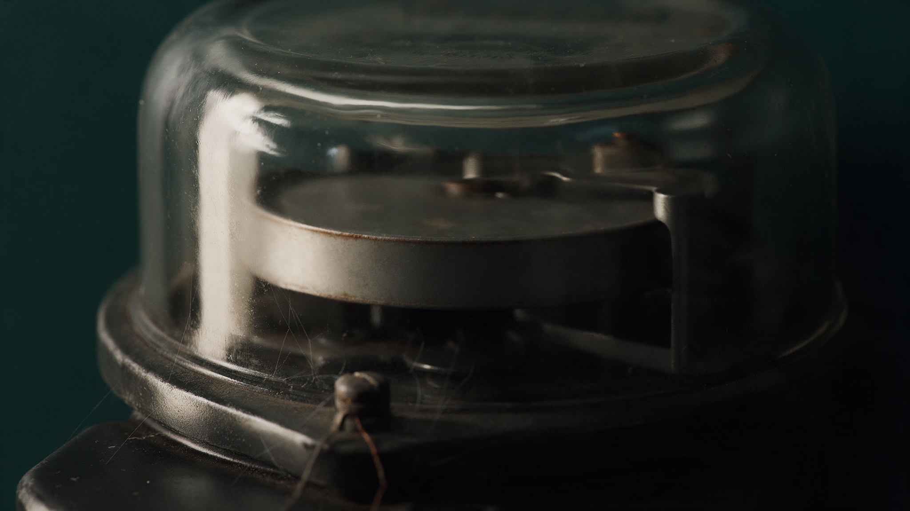

La cartera que nadie aseguró
La Marina decomisó 1,032 máquinas de criptominería en Tlaola, Sierra Norte de Puebla, sin un solo detenido. Toda la semana se repitió una cifra de ganancias mensuales, pero el mes es la unidad equivocada: quien mina acumula. Calculado día por día con la dificultad y el precio reales, un año de operación son 34 bitcoin y desde enero de 2025 son 58, que valían 125 millones de pesos en el máximo histórico de octubre y 60 millones en junio. En el inventario del cateo no figura ni una cartera. A menos de una hora de ahí, en Nueva Necaxa, nadie cobra la luz desde que el decreto de 2009 extinguió Luz y Fuerza del Centro por perder 30.6% de su energía, extinción que la CFE todavía presume a sus inversionistas como su logro contra el robo.

El viernes 11 de septiembre, en Tlaola, Sierra Norte de Puebla, la Secretaría de Marina cateó una finca escondida entre la vegetación que había localizado con drones. Adentro había 1,032 equipos para producir criptomonedas, 95 switches, cinco transformadores, antenas satelitales, un compresor de aire y una escopeta con 12 cartuchos.
No detuvo a nadie.
Conviene decirlo despacio, porque tampoco es la primera vez. En enero de 2025, a menos de una hora de ahí, en Juan Galindo, desmantelaron otra granja igual, montada dentro de un inmueble del Sindicato Mexicano de Electricistas. La Fiscalía cuantificó ese daño en 17,091,506 pesos. Ahí tampoco hubo detenidos. La denuncia que nombra a cuatro dirigentes del gremio la presentaron sus propios rivales internos en junio de 2025, y lleva quince meses congelada.
La palabra granja no ayuda, porque suena a changarro. Esas máquinas piden 3.6 megavatios continuos. Con el criterio que la propia autoridad usó en el caso de Necaxa, donde un transformador de 225 kilovoltamperios alimentaba a 50 casas, esa carga da para unas 800. No hablamos de un diablito. Hablamos de un pueblo entero colgado de la red.
Toda la semana se repitió una cifra: 4.5 millones de pesos al mes, atribuida a fuentes anónimas. Aunque fuera exacta, el mes es la unidad equivocada, porque quien mina no vende cada treinta días. Guarda.
La cuenta que sigue es mía, armada con la dificultad de la red y el precio que tuvo el bitcoin cada día, no con promedios, y va desglosada al pie para quien quiera rehacerla y contradecirme. Un año de operación deja 34 bitcoin en la cartera. Desde el desmantelamiento de Juan Galindo, 58.
Ahí el número deja de portarse como número. Esos 58 bitcoin valían 125 millones de pesos el 6 de octubre de 2025, el día en que la moneda tocó su máximo histórico de 124,777 dólares. Cayeron a 60 millones el 30 de junio de este año, cuando se desfondó hasta 58,534. El viernes cerraron en 81. El daño no es una cantidad: es un rango que se mueve solo, y quien tiene la cartera escoge el día en que se vuelve cifra.
Falta la otra columna del libro. En diecinueve meses, una finca así se bebe 51 gigavatios-hora, y la CFE ya le puso precio a esa electricidad en un expediente gemelo: le cobró al Sindicato Mexicano de Electricistas 16.6 millones de pesos por 6 millones de kilovatios-hora consumidos sin contrato en El Oro, Estado de México. A ese precio, la luz de Tlaola vale 141 millones.
Produjo 81 y se bebió 141. Ni en su mejor día la cartera alcanzó lo que costaba la electricidad, salvo por un detalle que lo cambia todo: el cobro de El Oro pudo incluir la multa de hasta tres veces el consumo que autoriza la Ley del Sector Eléctrico. Si la tarifa base era la tercera parte, la luz valía 47 millones y el negocio fue espléndido. Toda la economía del caso cuelga de un número que la CFE no ha publicado.
De ahí sale lo que es mi lectura, y la ofrezco como tal. La palabra minera estorba. ¿Quién sube semejante cantidad de máquinas a la sierra para perder dinero todos los meses? La operación solo se sostiene si el insumo cuesta cero, y entonces deja de ser un negocio de minería que además roba luz: es un robo de luz que sale convertido en un activo sin nombre, que cruza fronteras sin aduana, que no aparece en ningún estado de cuenta y que se revalúa mientras nadie lo toca.
Hay algo que el inventario del cateo no menciona, y su ausencia es el centro del asunto. La Marina se llevó máquinas, switches, transformadores, antenas, un compresor y una escopeta. No se llevó una sola cartera, ni un respaldo, ni una llave. Aseguró el fierro, que pierde valor cada vez que sale un modelo nuevo, y dejó afuera el producto, que flota y sube. Lo decomisado envejece en una bodega. Lo producido sigue trabajando.
La pregunta no es quién puso las computadoras. Es quién no miró el medidor.
Esto tiene nombre desde hace 87 años. En diciembre de 1939, Edwin Sutherland se paró frente a la Sociedad Americana de Sociología y les dijo que el criminal también usa corbata. Su hallazgo no fue ese, sino el de junto: el delito de cuello blanco no se distingue por existir, sino porque se procesa distinto. El mismo acto que a uno lo manda a la cárcel, a otro le llega por correo como multa.
El expediente de Tlaola es de manual. El robo de luz tiene dos puertas abiertas en México y las dos están escritas. La penal: el artículo 368 del Código Penal Federal lo equipara al robo desde una reforma de 1999, y cuando el monto es alto la pena va de cuatro a diez años de prisión. La administrativa: la Ley del Sector Eléctrico impone una multa de hasta tres veces la energía consumida, y la cobra un órgano regulador. Hasta hoy no se ha abierto ninguna de las dos.
La puerta penal, además, tiene una cerradura conocida. La pena depende del valor de lo robado, así que sin cuantía no hay agravante, y sin agravante no hay caso grande: hay un aseguramiento de fierros. Quien tiene ese número es la Comisión Federal de Electricidad, que dejó de publicar cuánto le roban desde 2020 y que en abril de este año reservó, por acuerdo de su Comité de Transparencia, los seis contratos que firmó en la última década con la empresa que opera las hidroeléctricas de esa zona.
El gobernador de Puebla dijo esta semana que ser amigo, compadre, familiar o colaborador de hace 10, 15, 20 o 30 años no le otorga a nadie pasaporte para delinquir. A mi juicio, esa frase contesta algo que nadie le preguntó en voz alta.
Hay un detalle más, y está en el papel oficial. El boletín de la Secretaría de Seguridad Pública de Puebla no habla de máquinas industriales: habla de tarjetas de video. Las tarjetas de video dejaron de servir para minar bitcoin en 2013, cuando llegaron los circuitos de propósito único y las volvieron obsoletas de un día para otro. Con tarjetas de video, esa finca produciría cientos de miles de pesos al mes, no millones. Una de las dos versiones está mal, y averiguar cuál cuesta una tarde de peritaje que nadie ha pedido.
Michael Mann escribió en 1984 que hay dos poderes distintos dentro de todo Estado y que conviene no confundirlos. El despótico es lo que la autoridad puede hacer sin consultar a nadie: firmar un decreto a medianoche, ocupar una planta, tumbar una puerta con una orden de cateo. El infraestructural es mucho menos vistoso y mucho más difícil: llegar al territorio y ejecutar ahí las cosas aburridas que sostienen a un país. Instalar un medidor. Emitir un recibo. Cobrarlo.
En la Sierra Norte los dos poderes se miden con la misma cinta. La Marina llegó con drones y se llevó 1,032 máquinas. La CFE no ha emitido un recibo en el pueblo de al lado en dieciséis años. El Estado alcanzó lo que cabía en un camión y no alcanzó lo que cabe en una memoria del tamaño de un encendedor.
La historia larga es peor, porque el decreto de 2009 dice en su propio texto por qué mataron a Luz y Fuerza: perdía 30.6% de la energía que manejaba, contra 10.9% de la CFE. El argumento fue la fuga. Diecisiete años después, la CFE sigue vendiendo esa extinción a sus inversionistas como su logro principal contra el robo, con estas palabras en la lámina 12 de su llamada del tercer trimestre de 2025: "Extinción de Luz y Fuerza del Centro, más de 39,000 gigavatios-hora de pérdidas de energía evitadas". En el territorio que se extinguió por fugarse, la fuga se volvió industrial.
En contra de esta lectura hay que poner cuatro cosas, y son serias. La primera es que la extinción funcionó: las pérdidas nacionales bajaron de 18.1% en 2010 a 12.3% en 2024, y la CFE está hoy en su mejor nivel en 23 años. La segunda es que los vecinos de Necaxa no son huachicoleros, son un conflicto laboral que nadie quiso resolver, y meterlos en el mismo párrafo que una granja clandestina sería una canallada. La tercera es que ninguna de las personas señaladas está imputada, y el diputado aludido lo dice con todas sus letras: "un grupo disidente, así lo digo y lo sostengo, estamos en procesos electorales". La cuarta es que el Estado sí actuó, dos veces, con la Marina.
No estoy diciendo que alguien en la CFE, en el sindicato o en la empresa que opera las hidroeléctricas de Necaxa desde 2015 haya permitido nada. Estoy contando que 3.6 megavatios no se desvían con un diablito casero, que van dos operativos en la misma sierra y que en los dos el saldo es idéntico. La pregunta no es quién puso las computadoras. Es quién no miró el medidor.
Queda el dato de casa, que apunta en otra dirección y por eso sirve. La división de la CFE que nos toca, Centro Sur, tiene el tercer índice de robo de energía más bajo del país, 3.72%, menos de la mitad del promedio nacional. Lo que tiene alto son las pérdidas técnicas: 6.33%, las segundas peores de México. Aquí no nos roban la luz. Aquí la red la tira sola. Son dos averías distintas y ninguna se arregla con un operativo.
El artículo que castiga el robo de luz se reformó en 1999. Lleva 27 años impreso. Lo que no aparece, todavía, es un detenido.
- Secretaría de Marina, inventario completo del cateo del 11 de septiembre de 2026 en Tlaola, vía Aristegui Noticias, 13 de septiembre de 2026. La Semar precisó que los 1,032 equipos y los 300 del conteo preliminar corresponden al mismo inmueble. En ese inventario no figura ningún dispositivo de resguardo de activos virtuales. aristeguinoticias.com/1309/mexico/fueron-mas-de-mil-los-equipos-asegurados-en-granja-de-criptomonedas-en-puebla-semar
- Operativo del 31 de enero de 2025 en instalaciones del SME en Nuevo Necaxa, Juan Galindo, sin detenidos; daño patrimonial de 17,091,506 pesos informado por la FGR el 22 de mayo de 2025, y el criterio de los transformadores de 225 kVA equivalentes a 50 casas cada uno. Periódico Central y Proceso. periodicocentral.mx/puebla/huachicoleo-electrico-de-sme-genero-dano-patrimonial-de-17-9-mdp-a-cfe-acusan-montaje/402088
- Edwin H. Sutherland, "White-Collar Criminality", discurso presidencial ante la American Sociological Society, Filadelfia, diciembre de 1939; publicado en American Sociological Review, vol. 5, núm. 1, febrero de 1940, pp. 1-12. asanet.org/wp-content/uploads/1939_presidential_address_edwin_sutherland.pdf
- Michael Mann, "The Autonomous Power of the State: Its Origins, Mechanisms and Results", European Journal of Sociology / Archives Européennes de Sociologie, vol. 25, núm. 2, 1984, pp. 185-213.
- Código Penal Federal, artículo 368, fracción II: el uso de energía eléctrica sin derecho y sin consentimiento se equipara al robo; fracción reformada en el DOF el 17 de mayo de 1999. El artículo 370 fija la pena según el valor de lo robado, de cuatro a diez años cuando excede 500 veces el salario. Texto vigente, última reforma DOF 13 de marzo de 2026. diputados.gob.mx/LeyesBiblio/pdf/CPF.pdf
- Ley del Sector Eléctrico, artículo 184, fracción V: multa de hasta tres veces el importe de la energía consumida a quien consuma sin contrato; la impone la Comisión Nacional de Energía, conforme al artículo 185. Nueva ley publicada en el DOF el 18 de marzo de 2025. diputados.gob.mx/LeyesBiblio/pdf/LSE.pdf
- Decreto por el que se extingue el organismo descentralizado Luz y Fuerza del Centro, Diario Oficial de la Federación, 11 de octubre de 2009. Los porcentajes de pérdida citados (30.6% y 10.9%) están en el cuerpo de considerandos, p. 2. diputados.gob.mx/LeyesBiblio/regla/n237.pdf
- Comisión Federal de Electricidad, Llamada con Inversionistas, 3T 2025, lámina 12: pérdidas técnicas 5.31%, no técnicas 5.20%, el menor nivel en 23 años, y la leyenda sobre la extinción de Luz y Fuerza del Centro. cfe.gob.mx/finanzas/financial-economic-information/Quarterly%20Investor%20Presentations%20Doc/2025/Llamada%20con%20Inversionistas%203T%202025_VF.pdf
- CFE Distribución, Programa de Ampliación y Modernización de las Redes Generales de Distribución 2025-2039, Tabla V.5: índices por división, incluidos Centro Sur (3.72% no técnicas, 6.33% técnicas). cfe.gob.mx/distribucion/cumplimiento/Documents/Programa%20de%20Ampliaci%C3%B3n%20y%20Modernizaci%C3%B3n%20de%20las%20Redes%20Generales%20de%20Distribuci%C3%B3n%202025-2039.pdf
- Bloomberg Línea, Arturo Solís: el robo de electricidad equivalió al 5% del consumo neto nacional en 2024, y la CFE dejó de publicar el monto en pesos después de 2020, cuando reportó 32,000 millones, "pese a las solicitudes de información". bloomberglinea.com/latinoamerica/mexico/robo-de-electricidad-el-problema-multimillonario-al-que-mexico-le-sigue-la-corriente-cada-ano
- Periódico Central, reserva de seis contratos entre la CFE y Generadora Fénix acordada por el Comité de Transparencia de la CFE el 28 de abril de 2026, folio 340007700097926. periodicocentral.mx/puebla/cfe-y-generadora-fenix-acordaron-mantener-en-opacidad-sus-contratos-de-los-ultimos-10-anos/513453
- Declaración del gobernador Alejandro Armenta Mier, 14 de septiembre de 2026. sucesospuebla.com/sea-quien-sea-que-asuma-las-consecuencias-armenta-sobre-caso-de-granja-de-criptomonedas
- Comunicado de la Secretaría de Seguridad Pública de Puebla, 6 de septiembre de 2026, con la descripción del equipo como GPU, vía Proceso, 7 de septiembre de 2026. proceso.com.mx/nacional/2026/9/7/granja-de-criptomonedas-en-puebla-que-encontraron-y-que-investigan-en-tlaola-379547.html
- El Universal Puebla, Eduardo Sánchez: la comunidad de Nueva Necaxa y la quema de recibos tras la extinción de Luz y Fuerza del Centro. eluniversalpuebla.com.mx/estado/esta-comunidad-de-puebla-no-paga-luz-desde-hace-14-anos-por-esta-razon
- Diario Cambio, deslinde de Miguel Márquez Ríos respecto de la granja de Tlaola. diariocambio.com.mx/2026/politica/miguel-marquez-se-deslinda-de-granja-de-criptomonedas-asegurada-en-tlaola
- Periódico Central, denuncia presentada ante la FGR en junio de 2025 por integrantes del Sindicato Mexicano de Electricistas contra dirigentes del propio gremio. periodicocentral.mx/pagina-negra-s/delincuencia/fgr-investiga-a-lideres-del-sme-por-lavado-y-robo-de-luz-para-minar-criptomonedas-en-puebla/512855
- CriptoNoticias, cobro de la CFE al Sindicato Mexicano de Electricistas por 16,616,167 pesos correspondientes a 6,000,000 de kilovatios-hora consumidos sin contrato en El Oro, Estado de México. De ahí sale el precio de 2.77 pesos por kilovatio-hora usado en el cálculo. criptonoticias.com/sucesos/mineria-bitcoin-criptomonedas-clandestina-mexico-millonario-pago-sindicato
- Parámetros del cálculo. La producción se calculó día por día con la dificultad real de la red y el precio real del bitcoin de cada fecha, tomados de las series diarias de blockchain.com. Máximo histórico de 124,777 dólares el 6 de octubre de 2025; mínimo del periodo de 58,534 dólares el 30 de junio de 2026; 81,257 dólares el 19 de septiembre de 2026. Subsidio vigente de 3.125 bitcoin por bloque desde el halving de abril de 2024. Tipo de cambio FIX de 17.23 pesos por dólar (Banco de México). Supuestos declarados: 1,032 equipos Antminer S21 de 200 TH/s y 3,500 W, operación continua, sin costo de enfriamiento y sin contar comisiones de transacción, lo que deja la estimación corta por abajo. Los scripts completos acompañan a esta pieza. coinwarz.com/bitcoin-difficulty
Las ligas van a la vista para que cualquiera compruebe por su cuenta. Si alguna dejó de resolver, escríbenos y la reponemos.
SRVO